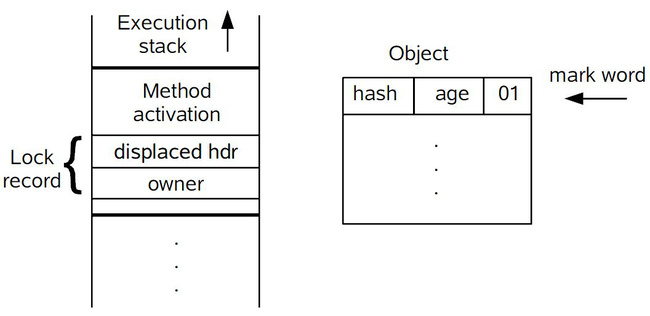

前言
Java SE 1.6 为了减少获得锁和释放锁带来的性能消耗，引入了“偏向锁”和“轻量级锁”，所以在Java SE 1.6里锁一共有四种状态：无锁状态、偏向锁状态、轻量级锁状态、重量级锁状态。它会随着竞争状况逐渐升级，但是不能降级。
在运行期间Mark Word 里存储的数据会随着锁标志位的变化而变化。Mark Word可能变化为存储以下4种数据：

关于MarkWord的详细描述参考：HotSpot中对象的内存布局
偏向锁（Biased Locking）
偏向锁的引入是为了解决 大多数情况下 锁不存在多线程竞争时的损耗，减少线程获得锁的代价。（据HotSpot作者研究发现，大多数情况下锁不紧不存在多线程竞争，而且总是由同一线程多次获得）
通过消除资源无竞争情况下的同步原语，进一步提供程序的运行性能。
偏向锁的获得
当一个线程进入同步块并 获取锁 时，会在对象头和栈帧中的所记录里存储偏向的线程ID，以后该线程进出同步块就不需要CAS操作来加锁解锁了，而是测试一下对象头的Mark Word里是否存储着指向当前线程的偏向锁，如果成功，表示线程已经获得锁，如果失败，则需要在测试Mark Word中偏向锁的标志是否设置为1（表示当前是偏向锁），如果没有设置，则使用使用CAS竞争锁，如果设置了，则尝试使用CAS操作将对象头的偏向锁指向当前线程。
偏向锁的撤销
它使用一种等到竞争出现才 释放锁 的机制，所以当有其他线程尝试竞争偏向锁时，持有偏向锁的线程才会释放锁。过程为：持有偏向锁的线程被挂起，JVM会尝试消除它身上的偏向锁，将锁升级为标准的轻量级锁。

禁用偏向锁
在Java6和7中，偏向锁时默认启用的，但是它在应用程序启动几秒后才激活，如果有必要刻意使用JVM参数来关闭延迟 -XX: BiasedLockingStartupDelay = 0。
如果你的同步资源或代码通常处于竞争状态，那么消除偏向锁这一步骤就是多余的，还会带来很大开销，禁用偏向锁 -XX: -UseBiasedLocking = false 。
轻量级锁（lightweight Locking）
JVM规范规定JVM基于进入和退出Monitor对象来实现方法同步于代码块同步，代码块同步是使用monitorenter与monitorexit两个指令实现的，而方法同步是另一种方式，不过方法同步同样可以使用这两个指令实现。monitorenter指令是编译后插入到同步代码块的开始位置，而monitorexit是插入到同步代码块结束处和异常处，JVM要保证它俩成对出现。是JVM依赖操作系统互斥(mutex)来实现。
互斥(mutex)：是一种会导致线程挂起，并在较短的时间内有需要重新调度回原线程的，消耗资源较大。
轻量级锁(Lightweight Locking)本意是为了减少多线程进入互斥的几率，并不是要替代互斥，它利用CAS原语，尝试在进入互斥前进行补救。
加锁
线程在执行同步块之前，JVM会在当前线程的栈帧中创建用于存储所记录的空间(lock record)，并将对象头中的Mark Word复制到锁记录中，官方称之为 displaced Mark Word ,之后JVM需要CAS做一步交换指针的操作，即将对象头的Mark Word替换为指向锁记录的指针（指向lock record所在的stack的指针，作用是让其他线程知道，该object monitor已被占用），如果成功获取锁，失败则表示有其他线程竞争锁，当前线程便尝试使用自旋来获取。
指针交换操作如图所示：

解锁
解锁时，会使用CAS操作来讲displaced Mark Word替换回到对象头，如果成功，则表示没有竞争发送。如果失败，表示存在竞争，锁就会膨胀(inflated)成重量级锁。

优缺点
时间：2013-5-7、2013-5-10
参考：聊聊并发（二）——Java SE1.6中的Synchronized、Java偏向锁实现原理(Biased Locking)、Java轻量级锁原理详解(Lightweight Locking)、虚拟机中的锁优化简介（适应性自旋/锁粗化/锁削除/轻量级锁/偏向锁）